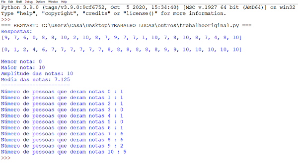
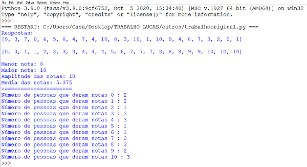

Tema do Projeto:
Em ambiente de pandemia, a população se isola dentro de suas casas em quarentena, como a única forma existente de proteger tanto a si quanto a seus parentes e amigos. Porém, uma abstinência súbita de contato social pode impactar na saúde mental das pessoas de um modo geral. Pensando nisso, nossa equipe montou uma sondagem.
Sobre nós:
Somos alunos do 5º período do Técnico em Informática no Instituto Federal de Educação, Ciência e Tecnologia do Ceará (IFCE). Estamos realizando um trabalho de coleta de pesquisas para a disciplina de Programação Estruturada, nele, temos o objetivo de organizar e listar os dados com a linguagem de progamação C ou Python. Para uma melhor exposição e também uma consciência social sobre o COVID-19 nós criamos esse site.
Exemplo de progamas.
Perguntas:
Para a realização do projeto, nós fizemos algumas perguntas para alguns indivíduos. Nelas, o participante teria que dar uma nota de 0 a 10, sendo 0 o menor valor e 10 o maior valor. As perguntas foram:
Estatísticas:
24 pessoas votaram e nós temos aqui uma tabela com os resultados mostrados.
Resultados:
I: 9, 7, 6, 0, 8, 8, 10, 2, 10, 8, 7, 9, 7, 7, 1, 10, 7, 8, 10, 8, 7, 4, 8, 10.
II: 9, 3, 7, 0, 6, 5, 8, 4, 7, 4, 10, 8, 3, 10, 1, 10, 9, 4, 8, 7, 3, 2, 0, 1.
Código:
Pergunta 1
Resposta 1
Pergunta 2
Resposta 2
.
Conscientize-se:
Para finalizar o nosso trabalho, apenas gostaríamos de salientar a necessidade da valorização a sua saúde psicológica em tempos tão conturbados. Caso necessário, procure ajuda de um profissional da área ou ligue para o número 188 Centro de Valorização da Vida,(link disponibilzado ao clicar), tenha sempre a sua saúde em primeiro lugar. Lembre-se também de usar sempre a máscara ao sair, pois ainda vivemos em um período pandêmico e ela é necessária para a sua proteção e a do próximo. Caso a vacinação tenha começado em seu estado certifique-se da data e do horário e aguarde as demais instruções dos profissionais qualificados.